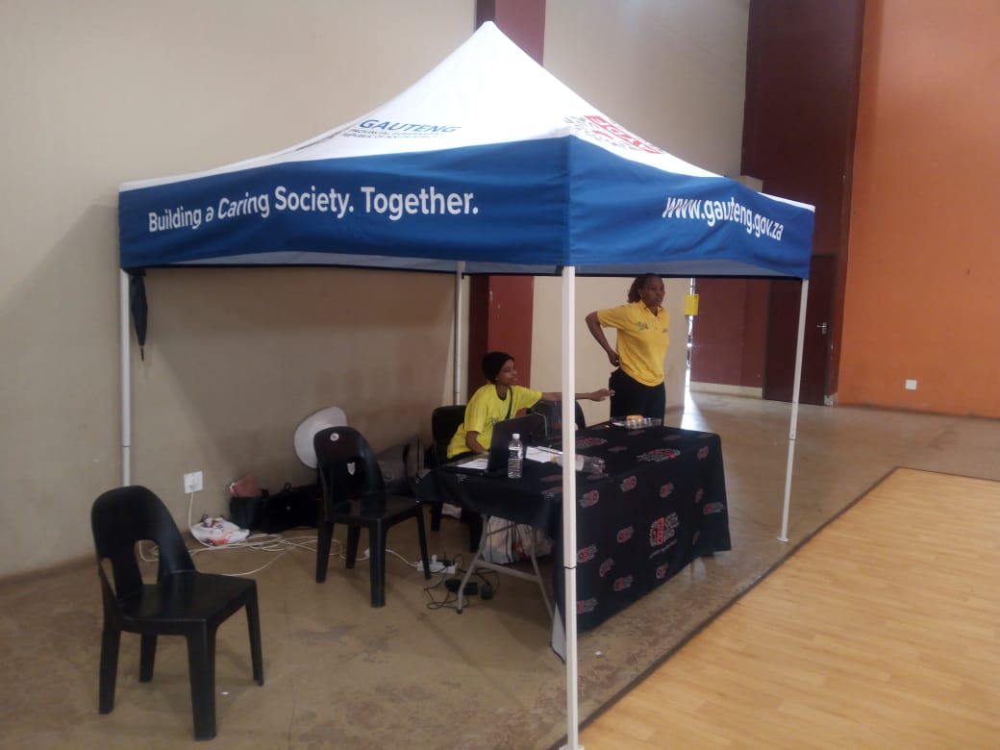

About US
Vukani History and Footprint
Vukani Care was established in 2000 by a group of 60 community members who identified a serious gap
in awareness and support around tuberculosis (TB) and HIV/AIDS in the Kokosi community. From its
founding, the organisation prioritized Direct Observe Treatment Short (DOTS) support, community
information dissemination, and family empowerment education. Ragoga supports services assisted in
the formal programme launched in March 2005, anchored at EXT 4 Sehudi Street No.4267, Kokosi.The
programme has since grown significantly. Today,42 members coordinate daily activities covering
psychological support, community awareness campaigns, HIV testing services, condom
distribution, health education, linkage to care, and Voluntary Medical Male Circumcision {VMMC}
outreach.
Our Mission
The organisation strives to render available services, protect the welfare of all who seek its assistance, and apply member skills in ways that are fully aligned with the ethical principles of home-based care.
Our Vision
To provide comprehensive home-based care including symptomatic relief, psychological support, and
spiritual comfort to patients cared for at home in the Kokosi Community.
Our Team Targets
- Community members in Kokosi living with or affected by HIV/AIDS and TB
- Caregivers, family members, and household guardians of patients
- Abused children who are HIV/AIDS affected and require care and support
- Potential donors, grant making organisations, and corporate sponsors
- Get NGO partners, volunteers, and general public seeking health resources
Governmental health departments referral institutions

This is our team on an event